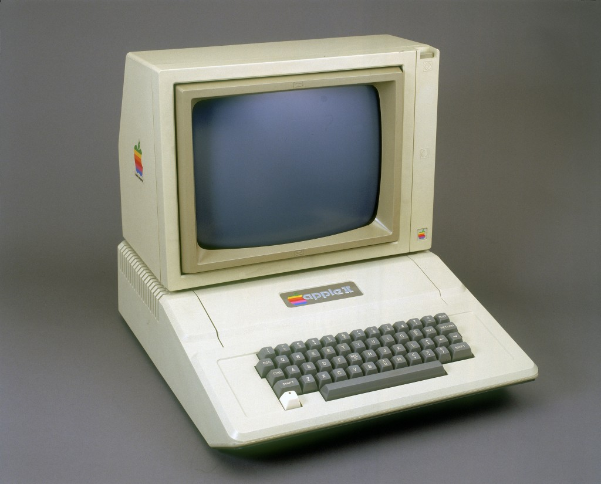
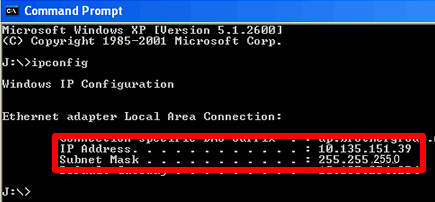
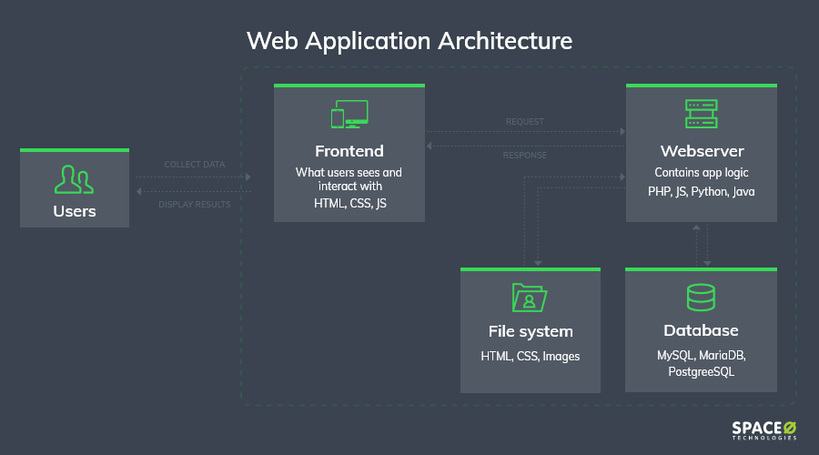

Technical Historian
WPR151, Group 11
This was done by Anoyolo Mlotha, Lesedi Mmathapelo Sedibe and Cameron Wood
Early Computers:
1. The History of the Internet
Who Invented the Internet?
It would not be the right to credit the creation of the internet to one person. The internet is a work of cumulation of human ingenuity of dozens of pioneering scientists, programmers and engineers who paved the way for the global information highway to be built. The first Workable prototype of the internet came in the late 1960s with the creation of the Advanced Research Projects Agency Network (ARPANET). This was originally funded by the US Department of Defence. It allowed multiple computers to communicate on a single network. Computer science research in the US was largely funded by the military and reflected the tense rivalry with the USSR. Built on the creative contribution of scientists around the world from the 1950s to present day.

The Origin of the Internet
Are rooted in the USA in the 1950s, during when the Cold War was at its height and the US realised it needed a communications system that could not be affected by Soviet nuclear attacks. During these times, computers where large and expensive machines that were used exclusively by military scientists and university staff. These machines were powerful, for the time, but they were limited in numbers, and researchers who were to use them had to travel great distances to use them. This problem led scientists, engineers and organisations to research the possibility of a large-scale computer network.
The First Use of a Computer Network
1965, Lawrence Roberts made two computes communicate with each other for the first time, each being in different places. This link used a telephone line with an acoustically couple modem that was able to transfer digital data using packets. The First Web Page 1991 the first web page was created; its purpose was to explain what the World Wide Web was. Governments Go Online In 1993, the beginning of the .gov and .org domain names was marked as both the White house and United Nations came online

Commercialization of the internet
Secure Sockets Layer (SSL) encryption was developed by Netscape, making is far safer to conduct financial transactions online. Echo Bay, a major online business, started in 1995 that later was to become eBay. Amazon also started in this year. Mosaic – The First Graphical Web Browser for the General Public This web browser made the internet more accessible and was released in 1993.
2. WWW Vs the Internet
World Wide Web
WWW stands for World Wide Web. It’s the universe of network-accessible information, an online library for human knowledge that is only a few clicks away. It’s a way of exchanging information between computers across the world.
3. Evolution of the Internet
In the Early Days
The internet’s birth place can be traced back to that of the US defence department in a project born from the Cold War. The military’s research department, the Advanced Research Projects Agency (ARPA) worked on a communication system that couldn’t be intercepted by the USSR. This led to the creation of ARPANET, one of the earliest iterations of computers being able to communicate with each other over a network between long distance. The project would eventually involve third-party contractors and a handful of universities in the U.S. The first message to be sent was by the University of California to Stanford University. The first message was “lo”, as the researchers were trying to send the word “login” but crashed after two letters. Below shows an image showing the communication system ARPANET consisting of communication centres and relays. In the 80s, smaller universities were given permission to connect to ARPANET. In 1983 the US Military was given its own branch, called MILNET, for secure communications. In the late 80s and early 90s internet protocols and these technologies become standardized and universities, businesses and regular consumer would begin connecting to the internet.
Broadband
In 2004, more people were now using broadband in the US than dial-up. This was telling for the changing times. As more people were signing up for broadband, the price went down and dial up would become obsolete. Broadband and Wi-Fi would revolutionize how we use the internet.
Fibre
Fiber-optic internet is a broadband type of connection that uses fibre-optic cable to be able to send data to 70% the speed of light. Fiber-optic, contrary to popular belief, is not a new technology and actually dates back to the 70s where it was first used in telecommunications. Construction across the globe already had begun in 1988, were fiber-optic cables were laid beneath the ocean, connecting the US to Europe. Today, a huge network of fiber optic cables is stretched around the world. Fibre has replaced older copper lines and are expanding rapidly across cities and into homes.
4. Internet protocols
TCP
In the 1970s network technology would grow as scientists such as Robert Kahn and Vinton Cerf developed Transmission Control Protocol and Internet Protocol (TCP/IP). This was a communications model that would set standards for how data could be transmitted between multiple networks. The Transmission Control Protocol (TCP) is a transport protocol that is designed for reliability, not speed. Making sure that all packets of data arrive in order are its main priority. TCP requires that a connection is first established between the devices and that a transmission is received.
HTTP
Hyper Text Transfer Protocol (HTTP) is a communication protocol. It serves as the foundation for exchanging data between web browsers and web servers. It fetches resources such as text, layout description, images, videos, scripts and more.
3. UDP
The User Datagram Protocol (UDP) is another type of transport protocol that is designed for speed and not reliability. It does not establish a connection between devices before sending or receiving transmissions.
What is IP?
The Internet Protocol (IP) is a protocol, for routing and addressing packets of data so that they can travel across networks and arrive at the correct destination. Data is divided into smaller pieces, called packets. IP information is attached to each packet, and this information and this information helps routers send packets to the correct places. Every device that connects to the internet is given an IP address.
What is a Network Protocol?
In networking, it’s basically a standardized format that all IP data packets must follow, so that devices are able to communicate with each other.
5. Web Application Architecture
What is Web Application Architecture?
The way in which the client and the server are connected is established by web application architecture. It’s a framework that determines how application components communicate with each other. The average user gets to see a specific page on their system, this is thanks to a series of interactions between various components of applications, user interfaces, databases and middleware systems. Web Application Architecture includes various components and external applications.
-

- Types of Web Application Architecture
- 1. Single Page Applications
- 2. Microservices
- 3. Serverless Architectures
- 1. A user browses for a specific URL, then the browser locates the correct parts from the correct servers and requests the data.
- 2. Over the network, data is sent back from the servers to the browser, then the browser executes the data and displays the requested page.
- 3. The user views and interacts with the given page.
Components of Web Applications Architectures
These can be divided into two categories: user interface and structural components. The structural components consist of the web browser, the web application server and the database server. The content that is displayed to the end user can be made with HTML, CSS and JavaScript. The structural components basically refer to the functionality of the web application. The database server stores data that is needed for the client’s specific application. It stores, retrieves and provides the information. The web application server manages business logic and data persistence and can be built using PHP.
6. Client-side and server-side engineering
Client-Side Vs Server-Side
The action takes place on the end users’ computer. By action, we are referring to the work that’s done through different programming languages such as JavaScript, Python and Ruby. The computer must understand what language its speaking for the code to do its job. Basically, all computers understand JavaScript, therefore you don’t need access to a web server, or the internet, to run JavaScript Scripts. This is known as client side. On the other side, if you want to run a language that the computer does not understand without access to the internet, then you’re going to need access to a server that understands the language. The tasks that need to be completed with these languages are preformed on the server. This is known as server side. For example, if you want to view your bank account balance you will need your device to be able to connect to the bank’s server. This is the reason for databases, making it easy for places, such as banks, to store all their user data in one accessible, centralized location where their users have easy access to it via the internet.

Front End Vs Back End Development
Web development is not a singular function, there’s more than one side to it that makes it preform properly. The primary forms are server-side, client-side and full-stack development. Client-side developers code to create good-looking, dynamic and functioning websites that preform well for users to interact with. Websites are multi layered and require a lot of behind-the-scenes work. Server-side developers design, maintain and build server-side code that makes it possible for data to exchange between clients and databases. These developers are known as backend developers.